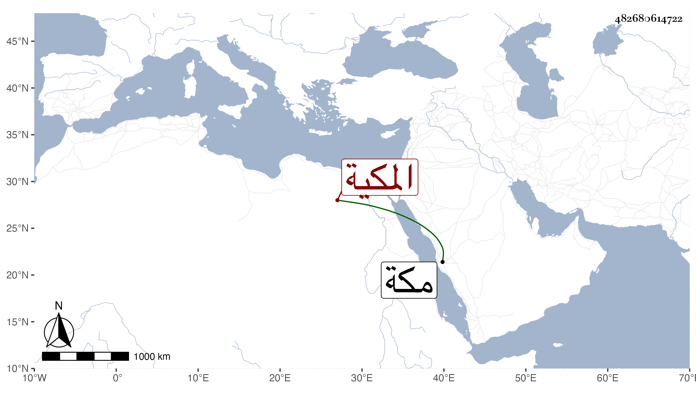

0902Sakhawi.DawLamic.ITO20230111-ara1.EIS1600.482680614722
Biography ID: 482680614722
860
أم الحسين الصغرى ابنة عبد الله بن أحمد بن حسن بن الزين محمد بن الامين محمد بن قطب القسطلاني المكية ، و أمها خديجة ابنة أبي عبد الله محمد بن حسن بن الزين . أجاز لها في سنة أربع عشرة و بعدها عائشة ابنة ابن عبد الهادي و الزين المراغي و ابن الكويك و آخرون ، و تزوجها الشريف عميد بن عاطف بن أبي دعيج بن أبي نمى الحسنة ثم الشريف مقبل بن محمد بن عاطف و ولدت لكل منهما . و ماتت في سنة تسع و عشرين بمكة و فيها أرخت وفاة أختها أم الوفا إما غلطا أو اتفاقا .
